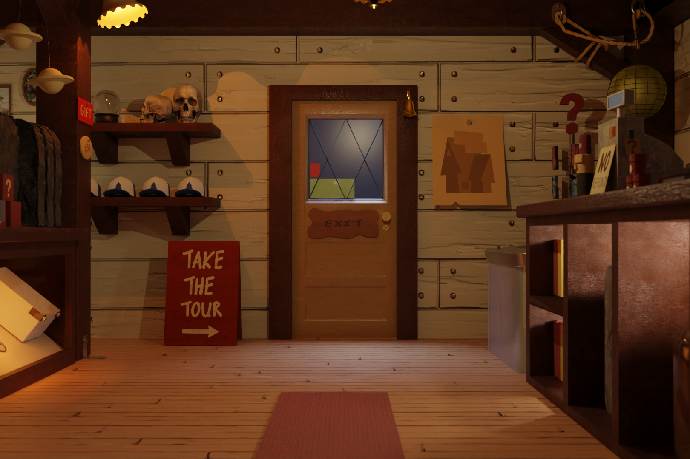
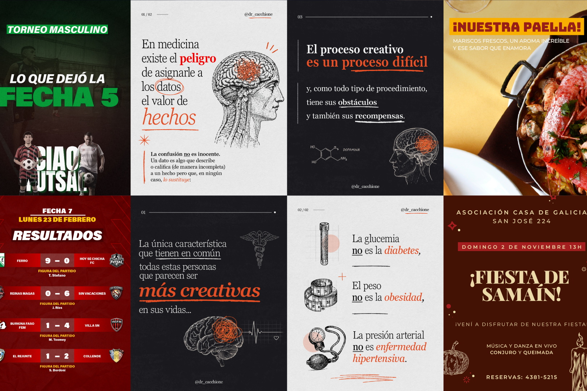
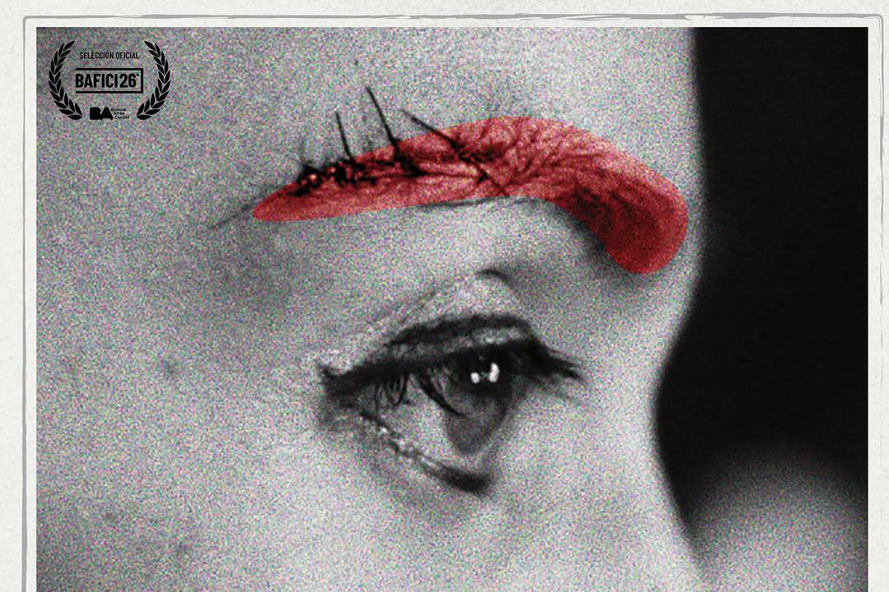
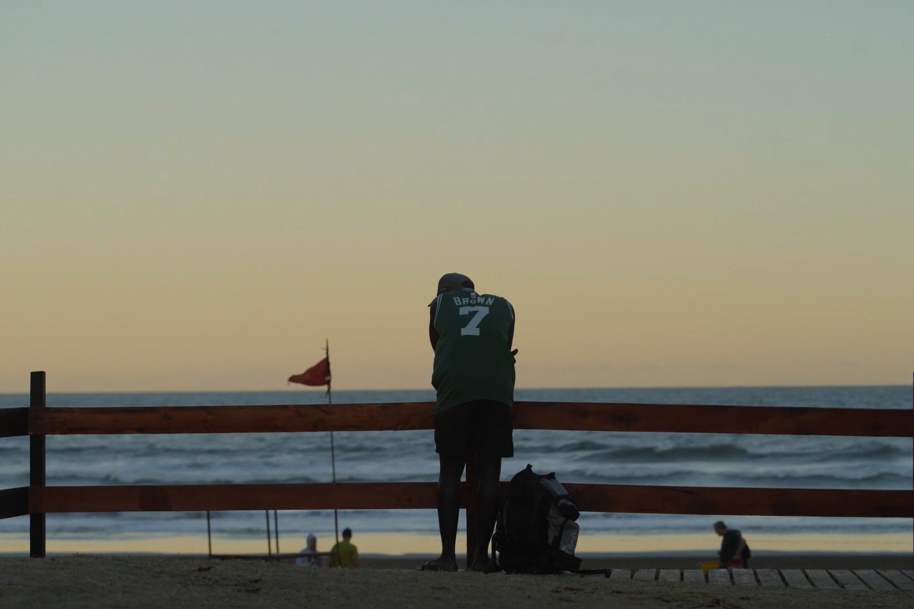
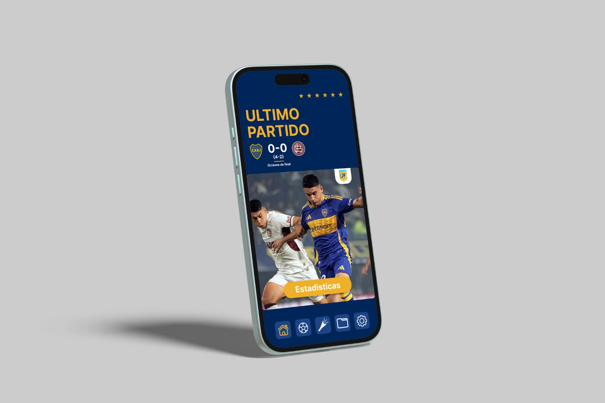
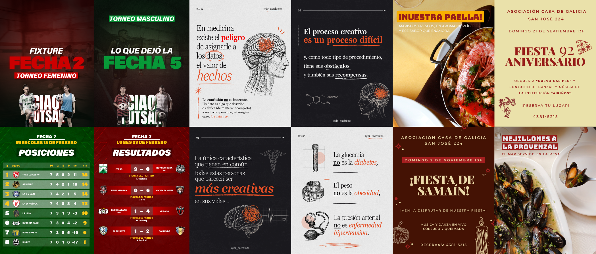
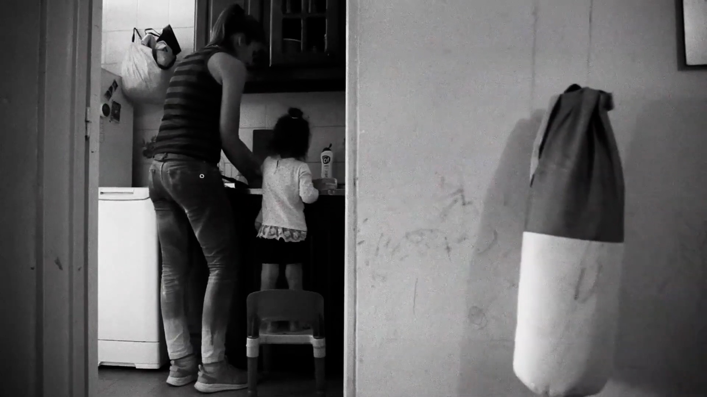

PROYECTOS










Modelado 3D · 4° cuatrimestre
Proyecto realizado para la materia Modelado 3D durante el cuarto cuatrimestre de la carrera. Se desarrolló la recreación de una habitación de la “Mystery Shack”, inspirada en la cabaña de la serie Gravity Falls. Todos los objetos de la escena fueron modelados desde cero, aplicando también texturas, organización espacial, iluminación y puesta de cámara.
render/vista principal de la imagen
Diseño gráfico · Edición de video
Realicé trabajos vinculados a la creación de contenidos para redes sociales, tanto en la facultad como fuera de ella. Trabajé para cuentas de distintos rubros, como fútbol, medicina y gastronomía, desarrollando piezas visuales pensadas para comunicar de forma clara y atractiva.
Mi trabajo estuvo enfocado en diseño gráfico, edición de fotos y edición de reels. En algunos proyectos también participé en la idea del contenido, especialmente en propuestas audiovisuales como reels de entrevistas.
Los contenidos realizados incluyen sistemas visuales, posteos, carruseles y piezas para redes, siempre buscando resolver cada trabajo de la mejor manera posible a partir del material disponible.

Piezas visuales para redes sociales
PostProducción · 3er Cuatrimestre
Trabajo realizado para la facultad, centrado en la creación de un trailer alternativo para el documental Burbuja, dirigido por Pablo Stigliani.
Mi participación estuvo enfocada en el guion y la planificación del trailer, trabajando junto a Ramiro Unrein y Franco Fusco en la coordinación del grupo.
El objetivo fue construir una pieza breve, clara y atractiva que reinterpretara el material original y funcionara como propuesta audiovisual.

Frame del trailer alternativo
Por cuestiones de derechos de autor, este video debe visualizarse directamente en YouTube.
Ver en YouTubePostProducción · 3er Cuatrimestre
Trabajo realizado para la facultad, centrado en la re-edición del documental Días de Temporada, dirigido por Pablo Stigliani.
Mi participación estuvo enfocada en el guio, la edición y la coordinación del grupo, trabajando junto a Ramiro Unrein y Franco Fusco.
Además, desarrollamos un trailer alternativo como pieza complementaria, buscando reinterpretar el material original desde una nueva propuesta audiovisual.
Frame del Documental alternativo
Por cuestiones de derechos de autor, este video debe visualizarse directamente en YouTube.
Ver en YouTubeDiseño Web y Mobile · 3er Cuatrimestre
Trabajo realizado para la facultad, centrado en el diseño de una web y su versión mobile para el artista Trueno, tomando como eje visual la temática de su álbum Bien o Mal.
El proceso incluyó la creación de un sistema visual, el armado del prototipo y la adaptación responsive para celular.
El trabajo fue desarrollado junto a Franco Fusco y Ramiro Unrein, y mi participación estuvo enfocada en el diseño de la interfaz y en el desarrollo de la propuesta interactiva.
Vista de la web y versión mobile
Diseño UX/UI · 3er Cuatrimestre
Trabajo realizado para la facultad, centrado en el diseño de la app Bostero Soy, pensada para reunir en un solo lugar distintas funciones y contenidos de interés para el hincha de Boca.
El proyecto fue desarrollado en grupo junto a Ramiro Unrein y Franco Fusco.
Mi participación estuvo enfocada en la investigación previa, el diseño UX/UI y el desarrollo de la simulación interactiva en Figma.
Vista del mockup mobile